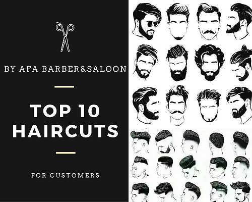
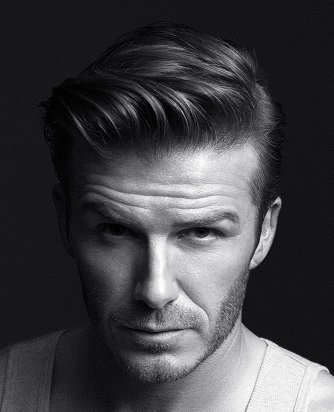
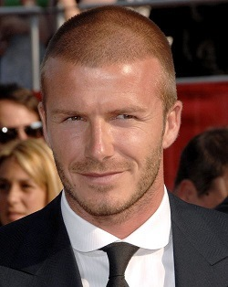
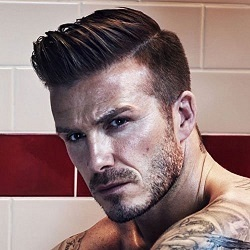
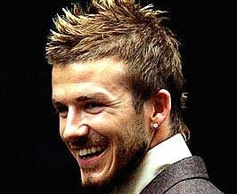
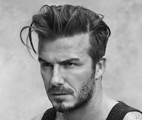
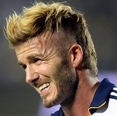
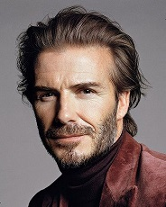

Hairstyles

AFA Barber&Saloon owners most favourite footballer all the time is the legend, David Beckham. He has been labeled style icon as one of the most fashionable gents around. Whether he’s appearing in a campaign or has simply been spotted walking down the street, he always looks smart with the attention of his hairstyle Beckham really inspired many other men. So,AFA Barber&Saloon are inspired by his hairstyle for the top 10 hairstyle in the barber bussiness.
- Comb-Over

This classic haircut adds an elegant and dapper touch to the our customer. Of course, Beckham’s comb over is a lot more fashionable. The customers can nail the look, we will blow-drying your hair to add volume before defining your part and using pomade to complete the style.
- Buzz Cut

The buzz cut of Becks with an edgy yet simple style. Buzz cuts were far from boring where the customers may spice things up a little by adding interesting shaved designs or different lengths, such as with this high and tight version.
- Undercut

The style features shaved sides that smoothly blend into a longer length on top.
- Side Part
The cut is one of the soccer star’s most sophisticated looks and also one of his most stylish. Perfect for any occasion when a suit is involved, be it work, dinner, or a wedding, The customers are guaranteed to win the look that works every time.
- Faux Hawk

The haircut, which mimics the appearance of a mohawk while softening its intensity, projects an edgy and youthful vibe.
- Pompadour

the perfect option for the customers To keep the look youthful and fresh,
- Blow Out
The style is created by blow-drying the top of the hair upwards so that the strands stand up tall. Hair products are then used to give the style hold and structure.
- Mohawk

The style is striking, eye-catching, neat and stylish. Today customers can ask to recreate this signature Beckham style and keep a little bit of length on the sides to ensure a modern appearance.
- Bro Flow

This signature hairstyle of Beckham is once again seriously cool, and while the star may not be rocking it right now, nothing can stop our customers from donning this great cut in your natural hair color for a modern update.
- Messy Crop + Bangs
This messy crop with bangs is one such cut that conveys a stylishly disheveled aesthetic. Customers may choose to cut the hair to sit forwards with choppy bangs resting on the star’s forehead.